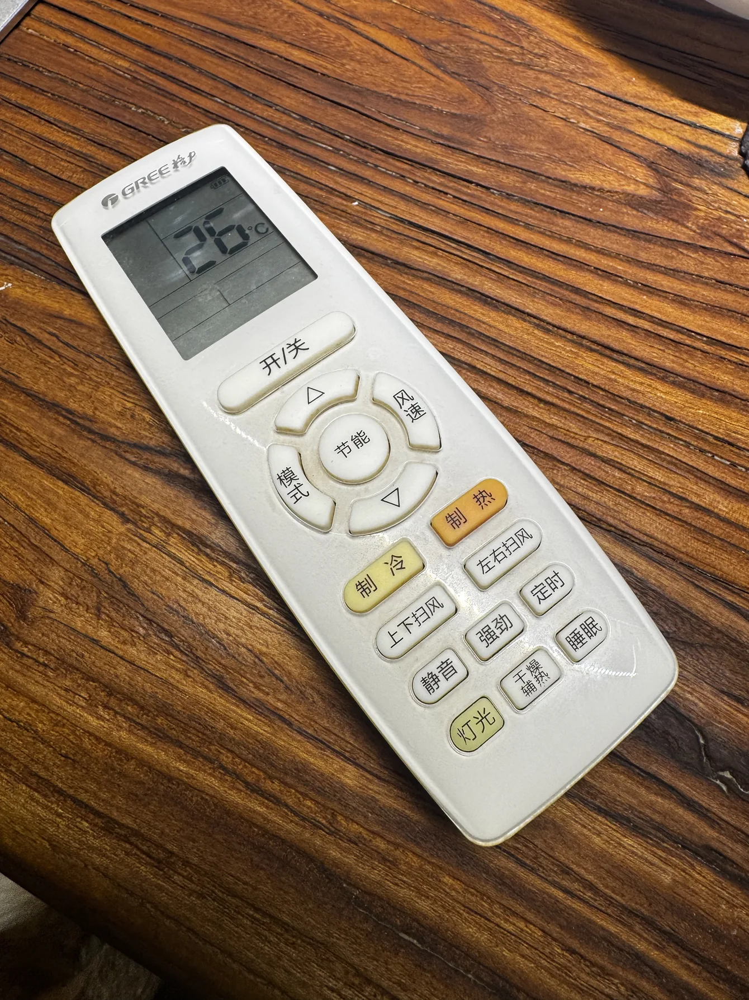
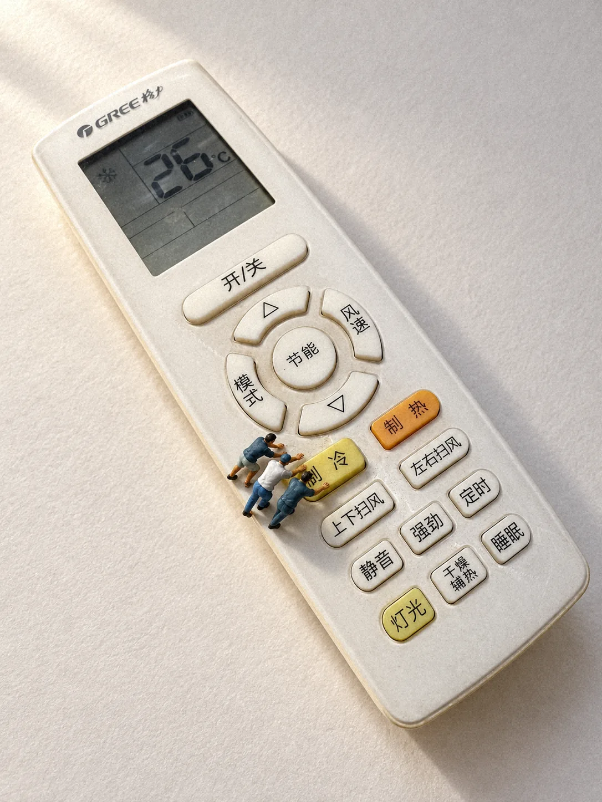

BEFORE / 商品事实
用户原照


屏幕、中文标识、按键顺序、冷热配色和旧痕，都是要保留下来的样子。
真实参考实测 / 2026-10-14

BEFORE / AFTER
三张图片均经用户授权在本项目公开。After 加了轻微胶片颗粒；两张光线相同，比较的是创意。
BEFORE / 商品事实

屏幕、中文标识、按键顺序、冷热配色和旧痕，都是要保留下来的样子。
AFTER / 01
天太热，一个人按不动制冷键，工人们全队出动，合力把它按下去。
AFTER / 02

骑车的人绕着节能圆键兜圈，像在城市环岛里慢慢骑行。
上传完整、清楚、且有权使用的商品照。屏幕或文字是关键时，请让它们清晰可见；需要精确恢复的隐藏结构另补参考。
使用 $create-miniature-world，把这张遥控器做成微缩摄影。先给三个不同的短方案，推荐一个，暂不生图。保留屏幕显示、按键数量与排列、中文标识、颜色和旧痕。
/create-miniature-world 把这张遥控器做成微缩摄影。先给三个不同的短方案，推荐一个，暂不生图。保留屏幕显示、按键数量与排列、中文标识、颜色和旧痕。
选定后说“按方案1生成一张”。也可直接说“创意你来定，生成两张让我挑选”。只要文字时明确说不生图。
Claude Code 没有内置生图时，会给你提示词，连同商品照一起交给能看图的图像工具生成即可。
上面是复用示例。本次实际请求是“拿这个测试一下”，再确认“实际生成两张，测试参考图保真”；具体创意和工具提示由助手构思。示例没有另行生成验证。
先看原物是否还能认出，再逐项对照屏幕、标识、键序、材质与旧痕。故事要看动作接触和承托，人物要看相对尺度，美感则看构图、光影和模型质感。
这次遥控器整体和主要按键都保留下来了，但细节有改动：第一张屏幕多了原照没有的雪花图标，部分字形和键形被重画；第二张有几只车轮压在按键边缘。对照原照看一遍，就知道下一步该改哪里。
例如：“去掉第一张屏幕新增的雪花图标，恢复原照片的显示状态，其余已确认部分保持不变。”或者：“第二张换一个不需要连续道路的创意，先给文字方案，不生图。”
编辑依赖当前工具，完成后仍需对照原照。这两条反馈示例本次没有执行；案例图片保留本次原始偏差。
两次内置image_gen调用，实际输入同一商品原照；分别附包内弯腰/骑车实拍人偶参考，仅管涂装。各1086×1448、RGB、3:4，原生文件保留本机。公开After另存轻颗粒版：none景深、grain 3.5、后期seed 0；该seed不是生图seed。
公开参考照由原件以jpegtran完整无损转正、移除EXIF/注释并保留ICC；未覆盖原件。生成原图与后期的摘要分别记录。来源、逐文件摘要和四维观察 · 实际工具提示 · 保真回归范围与结果
原照和两张After由用户明确授权本项目公开；图片不自动采用MIT，不提供额外商用、修改或再分发许可。包内涂装参考采用CC BY-NC 4.0；人偶造型、商标权利不因AI生成而消失。素材说明。